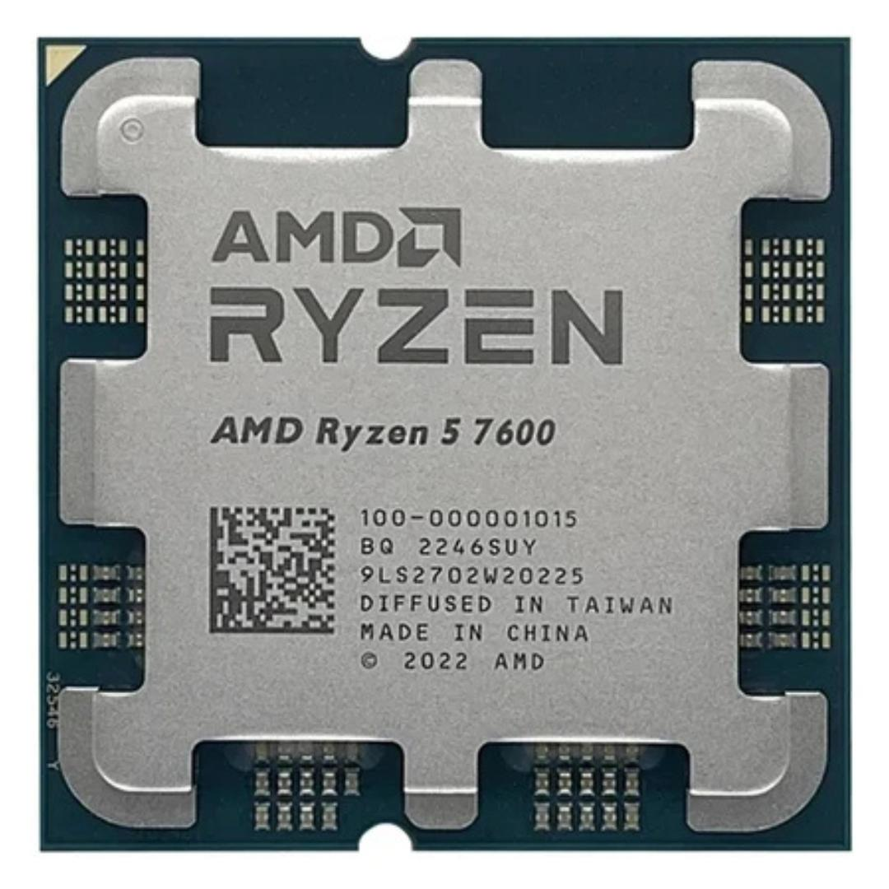
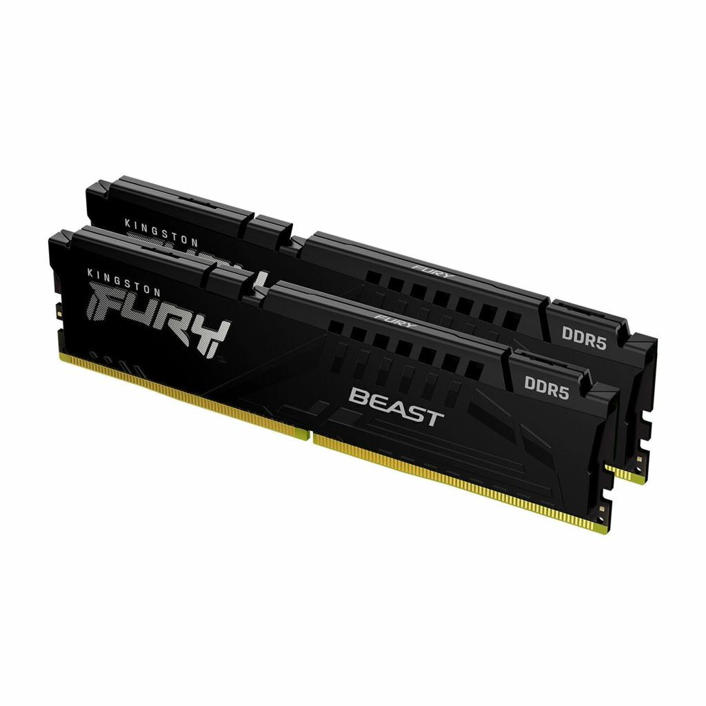
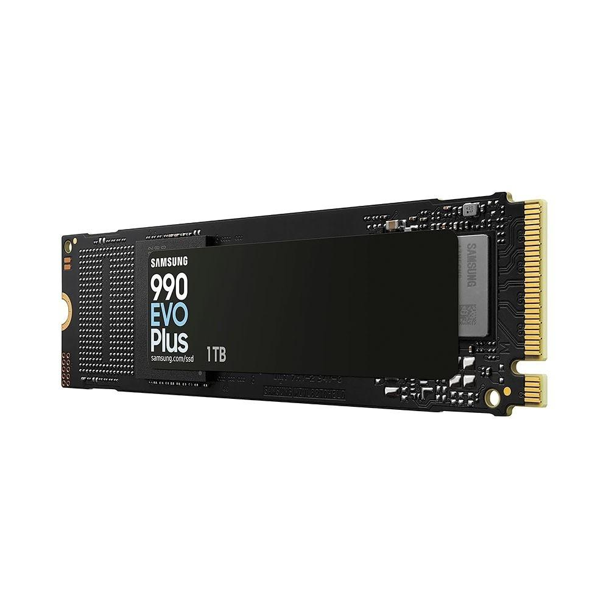
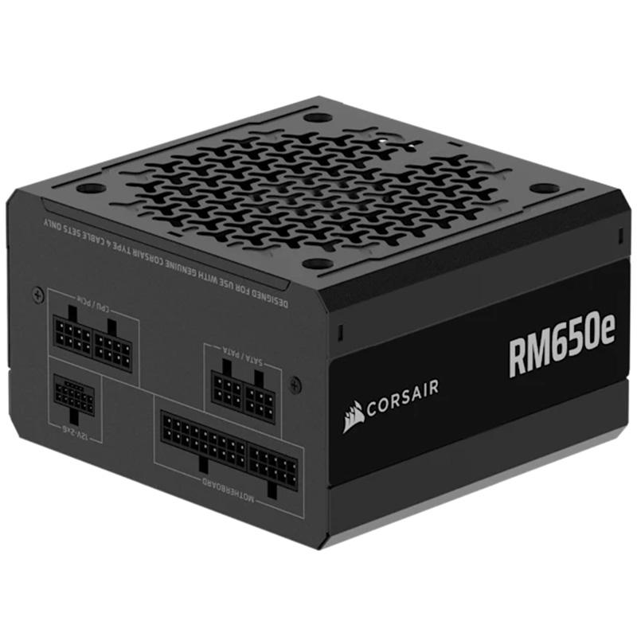
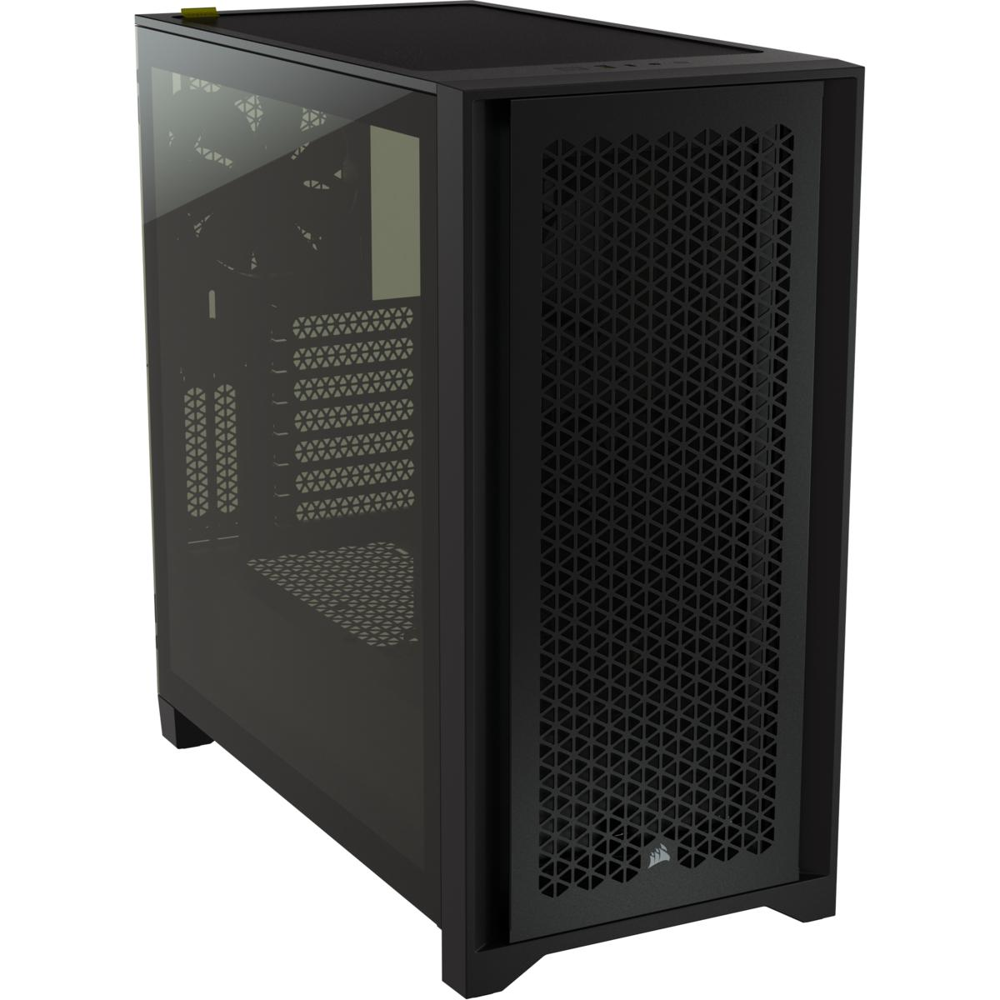
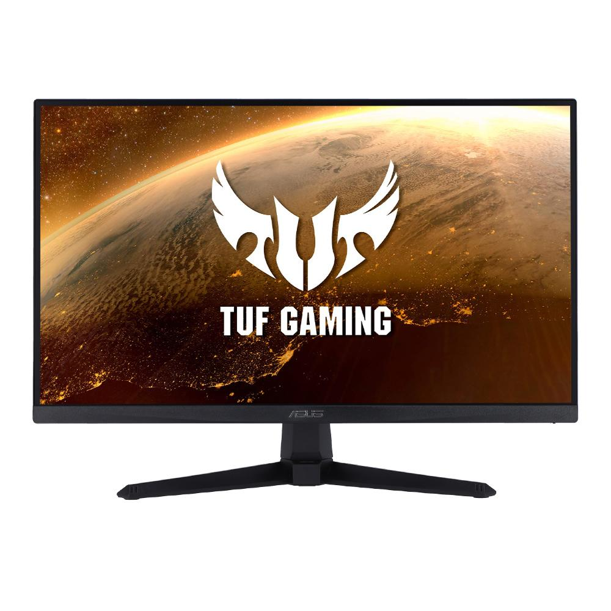

La placa base es uno de los principales componentes de un ordenador. A ella se conectan todo el resto de componentes, dispositivos y periféricos, por lo que hay que escogerla con mucho cuidado, ya que el resto de componentes deberán ser compatibles con la placa. Las características de la placa escogida son las siguientes:
132 € en Amazon.
El procesador (CPU) es uno de los componentes más importantes de un ordenador. Se encarga de ejecutar las instrucciones de los programas, realizar cálculos y coordinar muchas de las tareas del sistema. Su rendimiento influye en la velocidad del ordenador al trabajar, jugar o utilizar varias aplicaciones a la vez.

186 € en PCComponentes.
La memoria RAM almacena temporalmente los datos que el ordenador necesita mientras ejecuta programas. Una mayor capacidad permite trabajar con más aplicaciones simultáneamente.

559 € en PCComponentes.
El almacenamiento guarda permanentemente el sistema operativo, los programas, los documentos, las fotografías y los videojuegos. A diferencia de la RAM, los datos no desaparecen al apagar el ordenador.

230 € en PCComponentes.
La fuente de alimentación, o PSU, convierte la electricidad de la toma de corriente en la energía que necesitan los componentes del ordenador.

85 € en PCComponentes.
La torre es la estructura donde se instalan y protegen los componentes. También influye en la refrigeración, el espacio disponible y la facilidad para montar el ordenador.

105 € en PCComponentes.
El monitor es el dispositivo que muestra la imagen generada por la tarjeta gráfica. Sus características influyen en la nitidez, la fluidez y la comodidad visual.

169 € en PCComponentes.